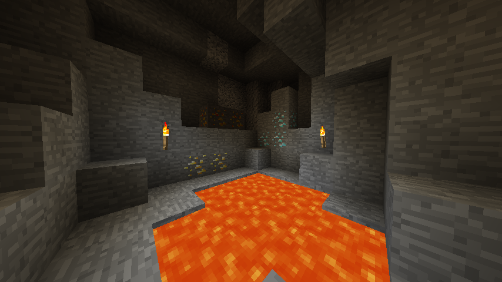

View Photos: HERE
GitHub Repository: HERE
About
 One night, my friends and I were talking about how much we loved playing modded Minecraft when we were younger. This sparked the idea for Alchemy. We want to create a mod that is simple to pick up, yet difficult to master, adding more depth to Vanilla Minecraft.
How it was Made
Alchemy is made for Minecraft a game originally developed by Mojang, but later purchased by Microsoft. Using Java and Minecraft Forge, we wrote the code for interacting with blocks and items, crafting recipes, and other aspects of the mod. In addition, we thought it would be more professional to create our own custom textures for our blocks and items. Each item and block texture in the game is custom made by either myself or one of my colleagues. We had to adhere to strict naming and syntax guidelines to allow our mod to run properly.
Currently, we have no version of Alchemy that is available to the public, however, if you would like to try the mod for yourself, please get in contact with me and I would be happy to provide the most recent verison to you.